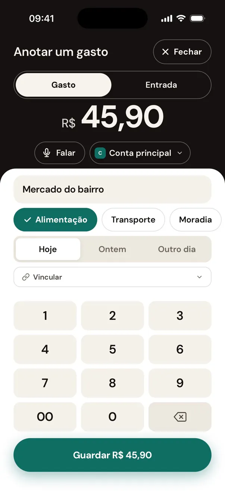
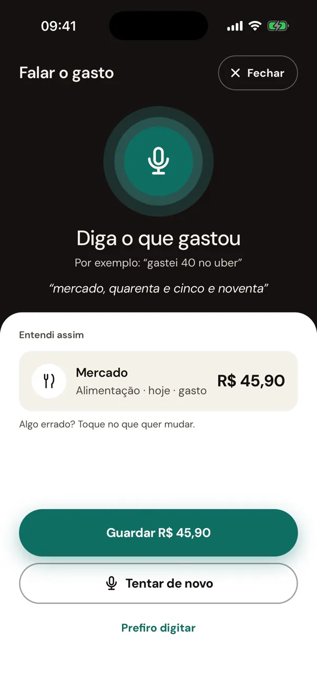
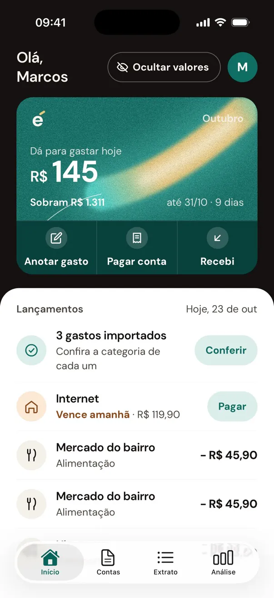
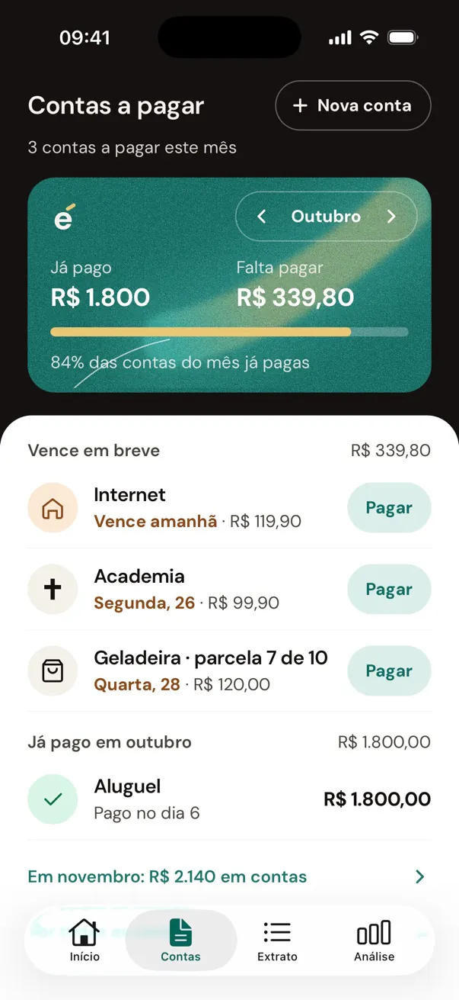
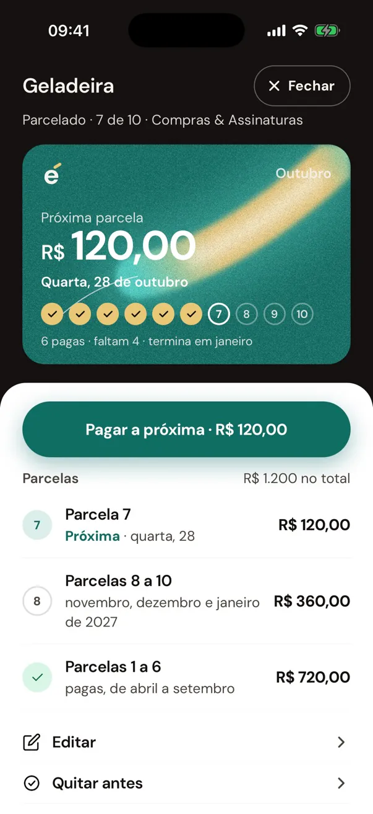
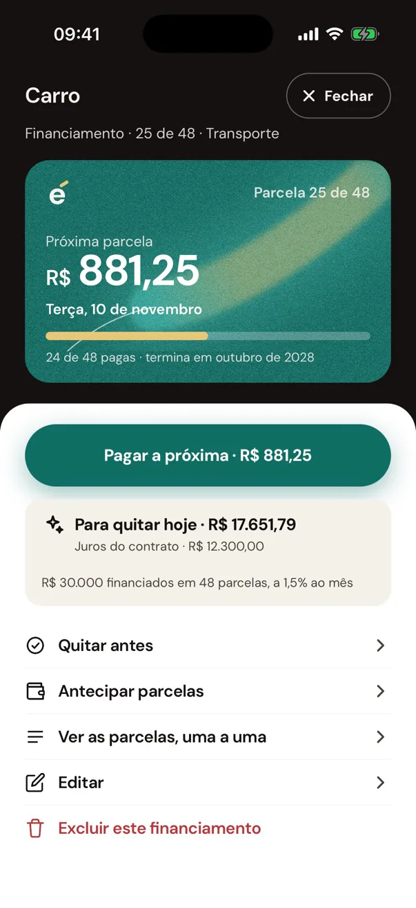
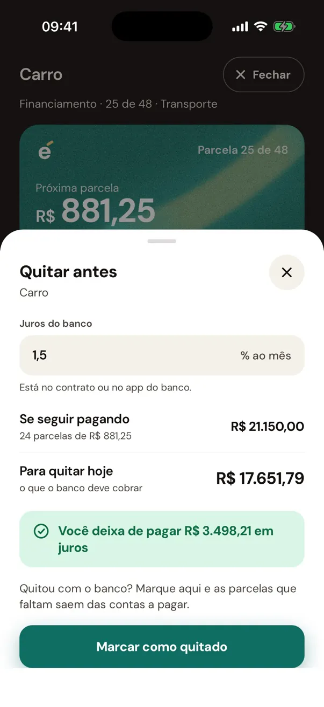
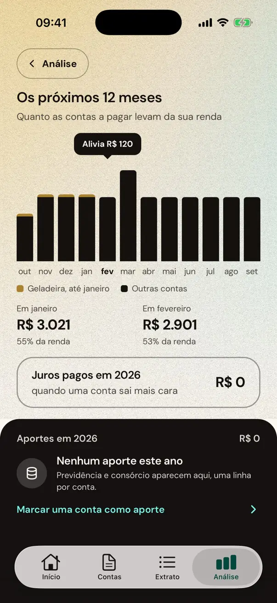
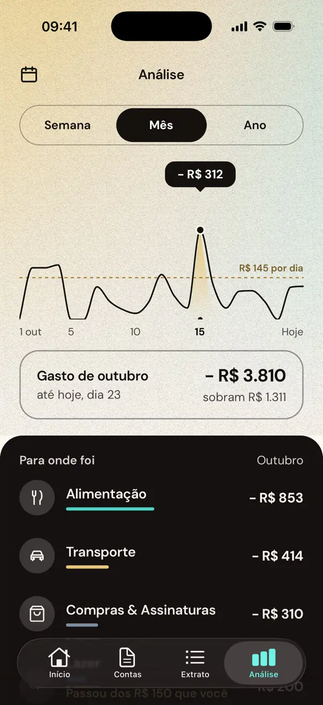
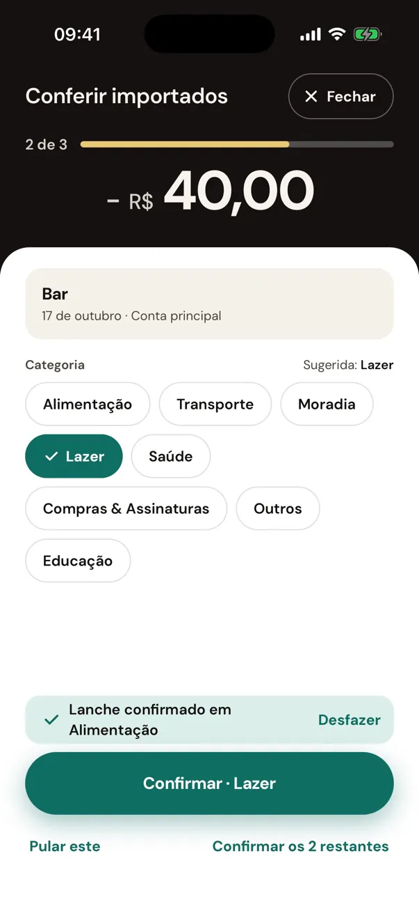

Anotar
Anotar um gasto leva segundos
Digite o valor no teclado grande ou fale do jeito que você falaria: “mercado, quarenta e cinco e noventa”. A Rédea entende o valor, sugere a categoria e mostra tudo antes de guardar.


Na App Store, para iPhone
A Rédea é um app de finanças pessoais para quem quer sair das dívidas. Ela mostra quanto dá para gastar hoje, acompanha cada parcela até a última e avisa antes de cada conta vencer.
A Rédea 4 está na App Store, de graça e sem anúncios. Baixar na App Store
Ver as telas
Capturas da nova versão, com dados de demonstração.
Anotar
Digite o valor no teclado grande ou fale do jeito que você falaria: “mercado, quarenta e cinco e noventa”. A Rédea entende o valor, sugere a categoria e mostra tudo antes de guardar.


Contas a pagar
Parcelamentos, financiamentos e contas de todo mês ficam no mesmo lugar. Você vê o que já pagou no mês, o que falta e, em cada parcelamento, quantas parcelas faltam e quando ele termina.


Financiamento
No financiamento, a Rédea mostra quanto custaria quitar hoje e quanto você deixa de pagar em juros. No exemplo do carro, a 1,5% ao mês, quitar as 24 parcelas que faltam economiza R$ 3.498,21.
Dá também para antecipar só algumas parcelas e ver, uma a uma, quanto de cada parcela é juros.


Os próximos 12 meses
Mês a mês, quanto as contas a pagar levam da sua renda. Quando uma delas termina, a Rédea mostra o alívio: no exemplo, a geladeira acaba em janeiro, e fevereiro fica R$ 120 mais leve.

Análise
A linha do gasto de cada dia, com o pico do mês e a marca de quanto dá para gastar por dia. Por categoria, você vê para onde o dinheiro foi e quando passou do limite que você mesmo combinou.

Importar extrato
Importe o arquivo OFX que bancos como Nubank, Inter, Itaú e Banco do Brasil exportam. Antes de gravar, você revisa a lista, e o que já estava no app fica de fora. Depois, confere a categoria sugerida de cada gasto, um por vez.
A Rédea também encontra no extrato as contas que se repetem, como assinaturas e parcelas.

Na nova versão, o que você registra fica guardado na sua conta, em servidores no Brasil. Se trocar de celular, é só entrar de novo, com a Apple ou com o Google.
Seus dados servem para o app funcionar e, em números somados, para sabermos como ele é usado. Não são vendidos.
Dá para trancar o app com o Face ID e esconder os números quando estiver no ônibus ou na fila.
Pelo próprio app: um arquivo com o que você registrou, ou a conta e os dados apagados na hora (as cópias de segurança somem em até 30 dias).
A nova versão não tem compras dentro do app.